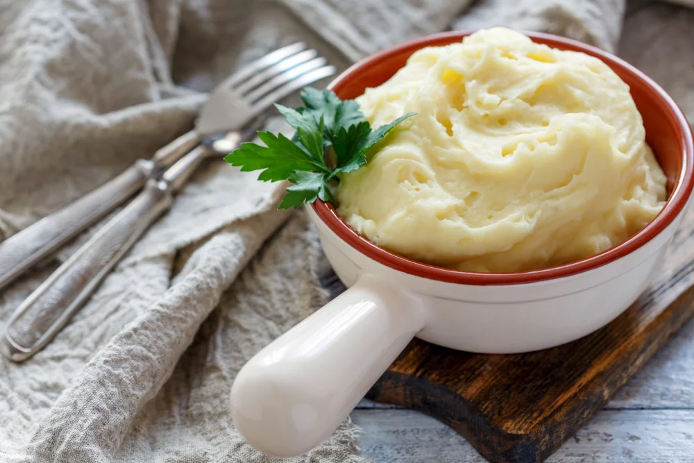

Puree

Description
The famous puree recipe of the grand cook Joël Rebluchon, it's
particularity is that it has a lot of butter
Ingredients
- 1kg of potatoes (BF 15 type)
- 10 g of salt
- 20 cl milk
- 250 g butter
Steps
- Wash the potatoes put them on a pot and recover them with water
- Salt with 10g of salt by water litter and heat the top for 20-25 minutes until
- Drain the water, peel them off while they're still hit
- In a pot heat the milk up with the butter add the potatoes rectify seasoning and serve right away